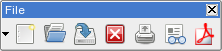
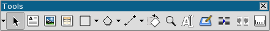
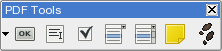
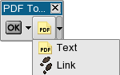
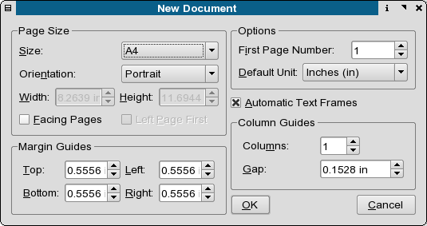

Once you have assembled all these bits, it is time to begin working in Scribus. For previous users of page layout applications, launching Scribus for the first time will seem comfortable and familiar.
Scribus has three different icon bars. 1) File Tools
|  |
Left to Right: File New,
2) Edit Tools
|  |
3) PDF Form Tools.
|  |
|  |
File > New brings up a dialog which has a number of options, the default is set in the preferences dialog under Edit - Preferences. Lets open the default and have a begin with importing text. Text in a Scribus doc is an object, so it can moved and manipulated very precisely, as we will do later on.
|  |
Selecting Automaitc Text Frameswill create one text frame per page with the borders of the text frame determined by the page margins.
Creating Text Frames
Now to create a text frame, click the Insert Text Box button on the top. Move the cursor to the upper left hand corner of the page canvas and left click drag to enlarge the frame. You can now either double click the frame or select the Text Cursor to begin editing. The other way and the I recommend is to import your text directly. But before set the font, size and alignments first - then import the text - this saves editing time. You can further modify text frames by the Right Click, which brings up a context menu or using the measurements palette via Tools > Show Measurements. Both panels share many of the same editing features. The modify option adds some PDF and color options, which are not available on the measurements palette. Edit Mode vs. Select Mode Switching between modes at the beginning can be confusing to new users - learning drawing programs can cause similar frustration. You select something, but you cannot do anything with it directly. It is doubly confusing, because while you are in select mode, you can move a text or image frame. How you can tell and how can you switch? There are a couple of basic ways which you can use and select tools and objects. To enable edit mode - simply double click the object, any object when double clicked will be in edit mode. The cursor will change from the cross, which is for moving selecting objects to the hand/text cursor. To exit, click the page canvas without touching other objects. This puts you back in select mode. Moving the cursor near the border or corner of an object frame the cursor will change to a double arrow. This will resize an object frame in one direction. When resizing with the mouse, holding Shift, will constrain or retain the same shape. Holding the Control key will retain the object's proportion. When you select a image or text frame, the red squares are grab handles. For text frames, the corner squares can be used to resize the frame. The top and bottom squares in the middle are for resizing vertically by dragging. Text Handling - Scribus has many different features for text handling, including support for right to left languages such as Hebrew and Arabic. Moreover, Scribus has a built in hyphenation engine based on the same one used in Open Office -it works well and many lanuguages are supported. There is also the ability to adjust kerning or spacing between letter pairs. You can squeeze text or spreeaaad it apart. Text boxes can be rotated, flipped and you can add them to paths, like following the arc of a circle.One of the challenges of learning DTP programs is sometimes the means of handling of text is somewhat different from the more usual ways it is done in with word processors. It looks close enough, but the behavior is different, sometimes maddeningly so. Unlike, word processors, two things are different. Scribus uses a frame metaphor to containt text objects. Moreover, it is more convenient for you to create longer texts in Scribus' own Story Editor or via importing text created in another application like Open Office. Thus you the ability to do things like rotate and otherwise manipulate text far easier and with more capabilties than a word processor. Second, Scribus does not automatically add text frame or pages when you have too much to fit. Instead, you can use text chains to link text from differing pages. This is how newspapers and magazines start an article on page 1 and finish it on page 16, for example.